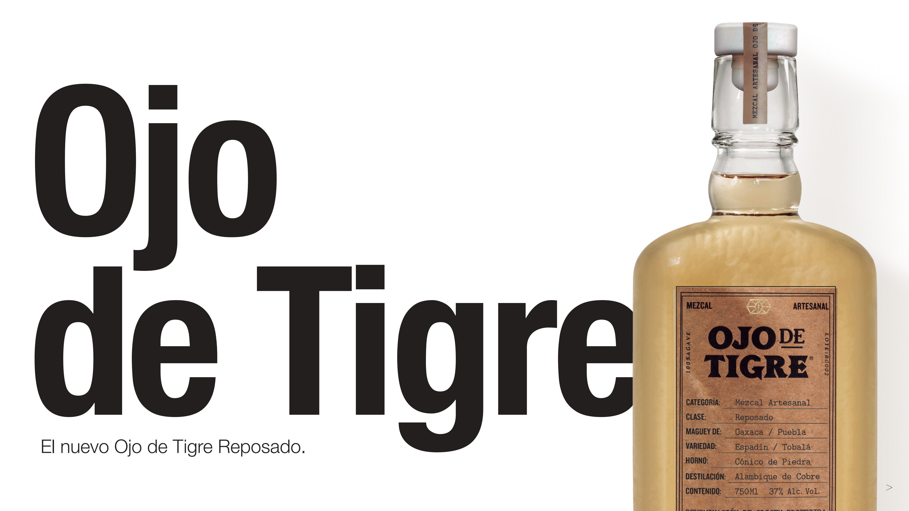
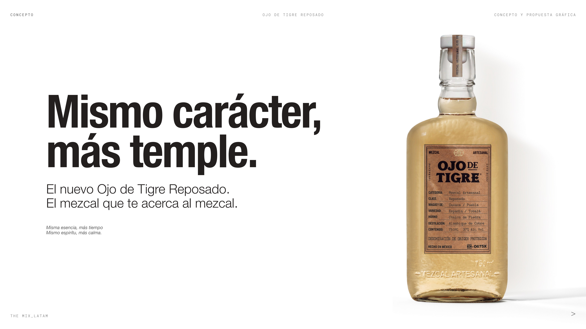
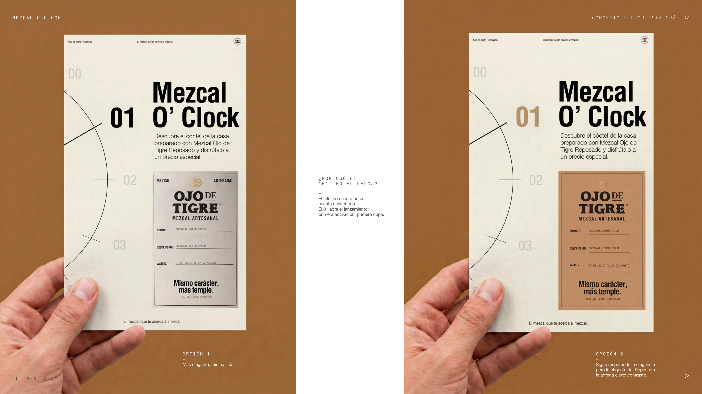
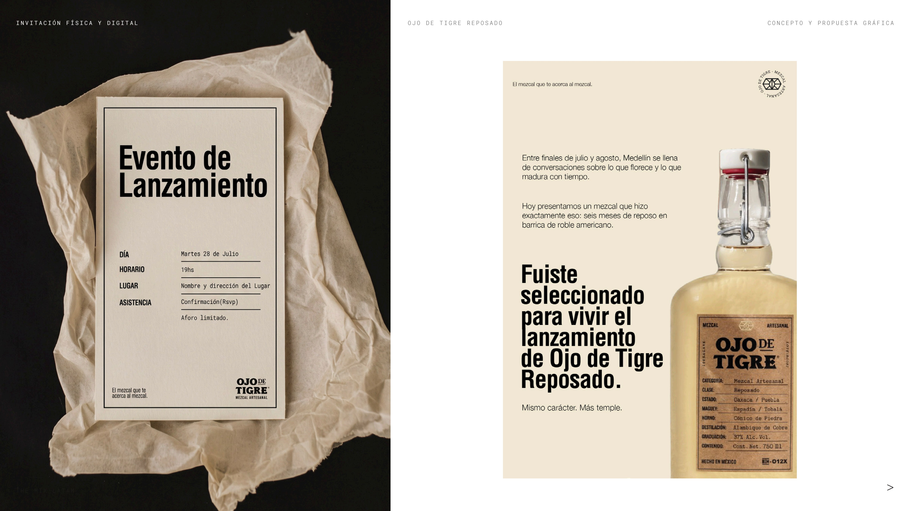
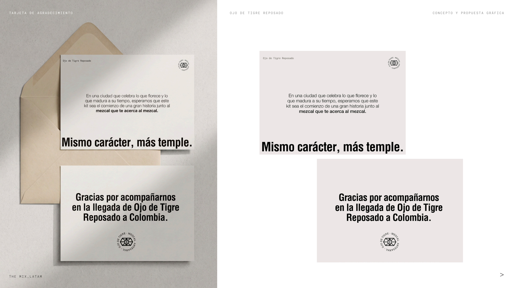

[ Ojo de Tigre Reposado ]


Pernod lanza Ojo de Tigre Reposado en Colombia. El desafío no era simplemente introducir un nuevo producto: era lanzar una versión envejecida sin demonizar la original.
Ojo de Tigre Joven es el producto estrella. El Reposado no podía competir contra él; tenía que acompañarlo. La pregunta era cómo posicionar otra experiencia del mismo mezcal sin canibalizar lo que ya funciona. Es un equilibrio que muchas marcas rompen.
No es un mezcal nuevo. Es el mismo de siempre, con más temple.
La decisión conceptual fue el claim: "Mismo carácter, más temple". Una frase que protege al Joven mientras abre puerta nueva. No es "mejor" ni "evolución" — es simplemente otra forma de disfrutar el mismo mezcal. Otro momento. Otra persona. Otra paleta sensorial.
Dirigí la estrategia visual completa: desde la identidad gráfica hasta cada touchpoint del lanzamiento en Medellín. El timing fue inteligente —la ciudad estaba predispuesta a hablar de maduración (Colombia Moda + Feria de las Flores)— pero conecté el concepto visual con ese relato. Invitaciones, menús, cocktails, cartelería del evento: todo responde a la misma lógica. La paleta, la tipografía, la composición. Cada pieza refuerza que es el mismo mezcal, solo con más tiempo en barrica. Elegancia sin restar.



El evento se ejecutó en Medellín. El concepto funcionó en la lógica de proteger mientras acompañás: el Reposado entra sin pedir que el Joven salga.